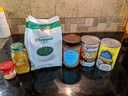
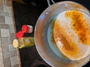
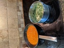
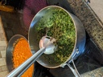
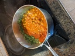
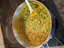

<p>
  Here's my Chana Masala recipe. Click on any picture to bring up the lightbox
  with captions.
</p>

<style>
  ul.recipe {
    display: flex;
    flex-wrap: wrap;
  }
  ul.recipe li {
    list-style: none;
    margin: 8px;
  }
</style>

<ul class="recipe">
  <li>
    <a class="gallery" href="./IMG_20200405_124115.jpg"
      ></a>
  </li>
  <li>
    <a class="gallery" href="./IMG_20200405_124452.jpg"
      ></a>
  </li>
  <li>
    <a class="gallery" href="./IMG_20200405_124735.jpg"
      ></a>
  </li>
  <li>
    <a class="gallery" href="./IMG_20200405_125155.jpg"
      ></a>
  </li>
  <li>
    <a class="gallery" href="./IMG_20200405_130313.jpg"
      ></a>
  </li>
  <li>
    <a class="gallery" href="./IMG_20200405_130513.jpg"
      ></a>
  </li>
  <li>
    <a class="gallery" href="./IMG_20200405_130636.jpg"
      ></a>
  </li>
</ul>

<script type="text/javascript" charset="utf-8">
  new LuminousGallery(
    document.querySelectorAll('.gallery'),
    {
      arrowNavigation: true,
    },
    {
      caption: function (trigger) {
        return trigger.querySelector('img').getAttribute('alt');
      },
    }
  );
</script>
